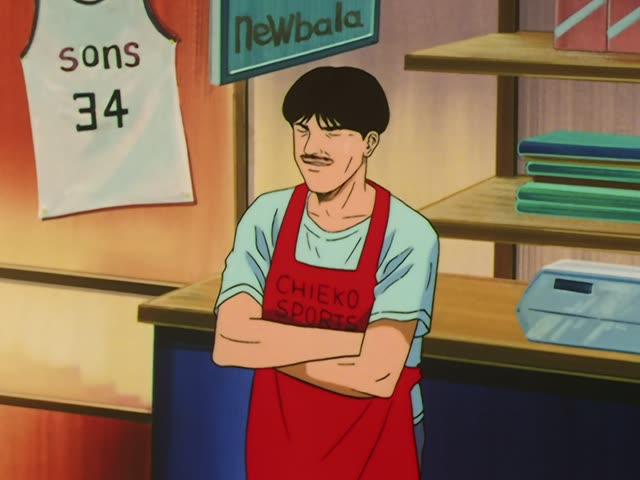

が → の
Why swap が for の?
So the sentence doesn't have two が. With の, the label on the noun is easy to spot, and the one real が stays for the main sentence:
母が作ったケーキが好き = two が, clunky
母の作ったケーキが好き = smoother, you'll hear this one
You never have to swap: が is always correct. Just know that の + verb or adjective means が, not "my".

Only Yesterday
意見のある人は 手をあげてください！
"Anyone who has an opinion, raise your hand!"
When a verb or adjective describes a noun (作った + ケーキ, "the cake I made"), the が in front of it can become の: 私が作ったケーキ = 私の作ったケーキ. Same meaning. This only happens in that describing part; in a normal sentence it stays が (私がケーキを作った). On this card, at a class meeting, the chair calls on anyone with an opinion: 意見のある + 人, the same as 意見がある人.

1 Litre of Tears · Episode 11
だってここが、私のいる場所だから。
"Because this is where I belong."
On this card, Aya says why she wants to stay: 私のいる + 場所, "the place where I am", the same as 私がいる場所.
Quick Examples
A coworker asks about your favorite food.
母の作ったカレーが一番好きです。
"I like the curry my mom makes best."
母の作った + カレー = "the curry my mom made".
PoliteShowing a guest a picture on the wall.
これは父の撮った写真です。
"This is a photo my dad took."
PoliteTelling a friend about your weekend.
友達の住んでる町に行ったよ。
"I went to the town where my friend lives."
CasualKaraoke night. You hand your friend the mic.
君の好きな歌、歌ってよ。
"Sing a song you like."
Works with adjectives too: 君の好きな + 歌.
CasualWith and without
私が作ったケーキです。
"It's the cake I made." Correct, a bit plain.
私の作ったケーキです。
"It's the cake I made." Same meaning, smoother. You'll hear this one a lot.
Examples from Media
Quartet · Episode 8
私の好きな人に あげてもいいですか？
"Can I give this to the person I like?"
私の好きな + 人 = "the person I like".

Death Note · Episode 13
ほら、僕の言ったとおりでしょう？
"See? It's just like I said."
僕の言った + とおり ("the way") = "the way I said".

Shirokuma Cafe · Episode 41
いちじくのある家ですよ。
"It's the house with the fig tree."
Before a noun, が can become の: いちじくがある家.

Slam Dunk · Episode 96
彼の言ったことに間違いはなかった。
"What he said was right."
彼が言ったこと → 彼の言ったこと.
Dungeon Meshi · Episode 16
お前の作った物だけは よく食べたか。
"He only ate well the things you made, huh."
お前が作った物 → お前の作った物.
Shirokuma Cafe · Episode 2
僕の好きなものは 皆もきっと好きだよ。
"I'm sure everyone likes what I like too."
僕が好きなもの → 僕の好きなもの.
Teasing Master Takagi-san · Season 2, Episode 5
私の好きな人って 誰だと思う？
"Who do you think the person I like is?"
私が好きな人 → 私の好きな人.
Kekkon Dekinai Otoko · Episode 10
あなたの言ったとおり。
"Just like you said."
あなたが言ったとおり → あなたの言ったとおり.
Further Reading
A Dictionary of Basic Japanese Grammar
Entry "Relative Clause", Note 3 · p. 378